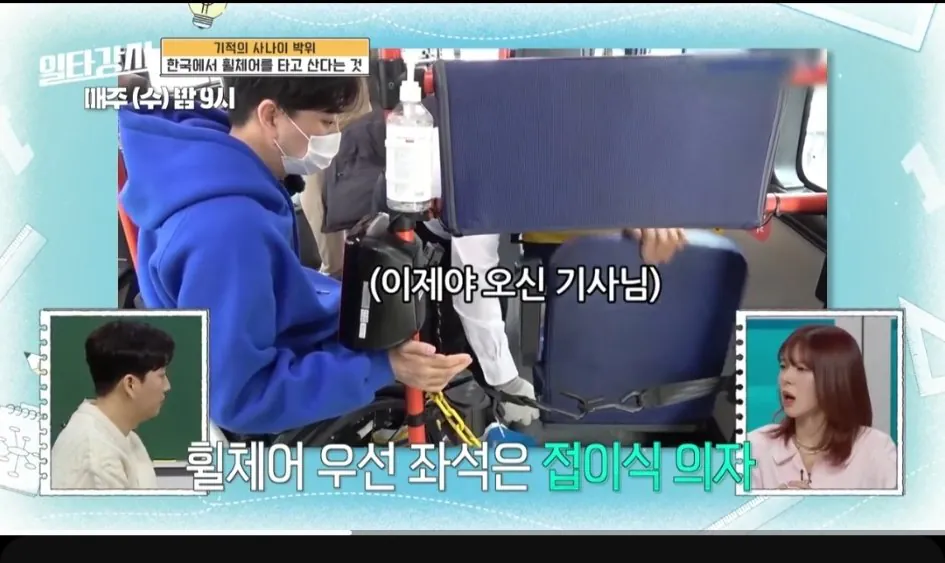
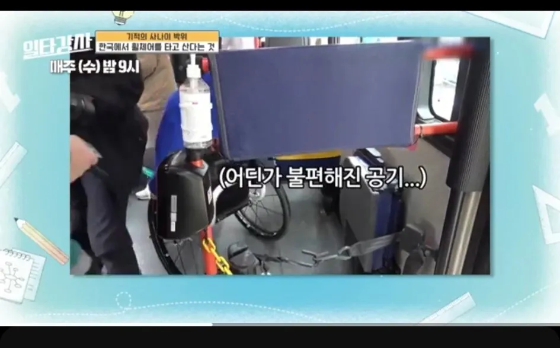

대충봐도 시간이 오래 걸리죠?
이러는건 좀..


대충봐도 시간이 오래 걸리죠?
이러는건 좀..
저렇게 바로바로 경사로 나와서 바로바로 내리면 그리 크게 짜증나진않음.
근데 한번은 휠체어탄 사람 타는데 경사로가 안내려오는거임
기사님 직접 뒷문으로 와서 혼자서 뚝딱뚝딱해서 태우는데 그거하는데만 5분넘게 걸림
근데 내릴때도 경사로 잘 안나와서 5분걸림 ㅋㅋ
목적지 도착시간 늦어져서 짜증은 나는데 자주 쓰이지도 않는 경사로 고장난거 때문에 기사님한테 짜증낼수도없고
그렇다고 휠체어탄사람한테 짜증낼수도없고 여러모로 서로서로 짜증나는상황 생기더라
휠체어탄 장애인분은 진짜 가시방석 아니었겠나
약간 그 천연기념물 짤생각나는데?
아무도 천연기념물인 나를 심판하지 못해 그게 이 나라 사법의 한계다